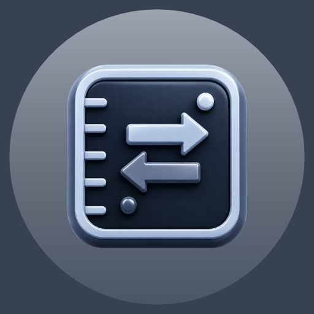

JWO Conversor
Aplicativo para converter unidades de medida

JWO ConversorJWO Conversor é um aplicativo de conversão de unidades e moedas simples e intuitivo, ideal para quem deseja transformar medidas e valores com rapidez, precisão e praticidade. Desenvolvido para estudantes, profissionais, viajantes e qualquer pessoa que precisa realizar conversões no dia a dia, o aplicativo reúne diversas categorias de unidades em uma única ferramenta. O objetivo é oferecer um ambiente organizado onde o usuário possa converter comprimento, massa, temperatura, área, volume, velocidade, tempo e outras medidas com facilidade. Basta selecionar a categoria desejada, informar o valor e escolher as unidades de origem e destino para visualizar o resultado de forma imediata. O aplicativo também oferece conversão de moedas internacionais com taxas de câmbio atualizadas e confiáveis quando há conexão com a internet, para viagens e compras. A dinâmica é fácil de aprender, tornando o aplicativo acessível para iniciantes e profissionais que buscam uma ferramenta rápida e eficiente. As principais conversões de unidades funcionam offline, garantindo praticidade e acesso aos recursos essenciais em qualquer lugar. Com uma interface limpa e moderna, proporciona uma experiência fluida, organizada e fácil de usar.
- Conversão de unidades e medidas
- Conversor de moedas internacionais
- Resultados rápidos e precisos
- Conversões de unidades offline
- Interface simples e fácil de usar
Baixe agora e simplifique sua rotina com conversões rápidas e precisas!